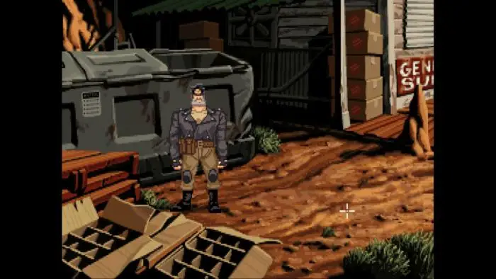
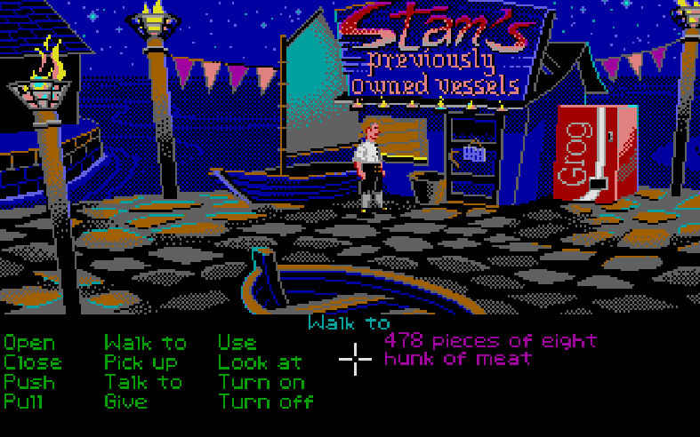

GELC #1
Grupo de Estudos de Linha de Comando
Windows
 Se você está no Windows, vai ter diferentes formas de usar o terminal:
Se você está no Windows, vai ter diferentes formas de usar o terminal:
* command prompt (❌)
* powershell (❌)
* terminal do WSL (✅)
* gitbash https://git-scm.com/download/win (✅)
Terminus
1. https://web.mit.edu/mprat/Public/web/Terminus/Web/main.html
Estilo jogos "Point and Click" ou "Adventure" de antigamente.
Full Throtle
Monkey Island
Shattered Pixel Dungeon
Nethack

GELC #1
Grupo de Estudos de Linha de Comando